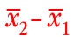
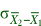

Interval estimate
A point estimate of µ2 - µ1 cannot be easily interpreted on its own. The estimated error distribution that was shown on the previous page helps, but statisticians commonly use an interval estimate instead — a range of values within which we are confident that the true value of µ2 - µ1 will lie.
If population standard deviations were known...
From the normal distribution of the error, we can state that
Prob (  is within ± 1.96  of μ2 - μ1) = 0.95
If we knew the values of the two parameters σ1 and σ2, we could therefore obtain a 95% confidence interval for µ2 - µ1 as
± 1.96
Confidence interval for difference
Unfortunately, neither σ1 nor σ2 are known in most practical applications, so we must replace them by their sample equivalents in the confidence interval. As a result, the constant '1.96' must also be replaced by a slightly larger value from t-tables,
Group B has a population mean that is 10 greater than the mean of group A. Click Accumulate then take 100 or more samples from the two populations.
Observe that approximately 95% of the resulting confidence intervals for μ2 − μ1 include the true value (10).